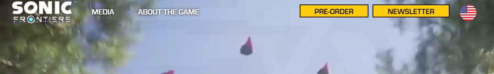
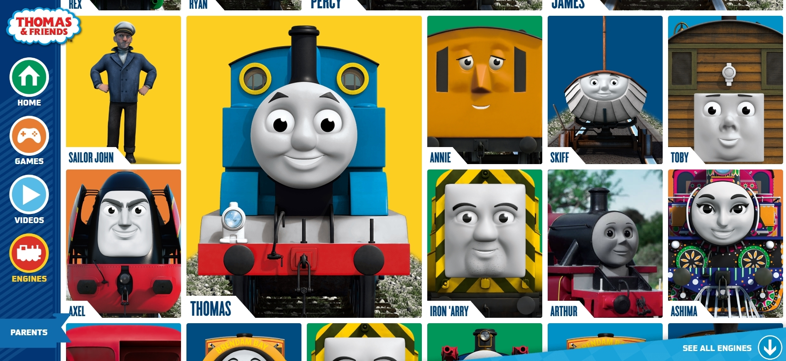
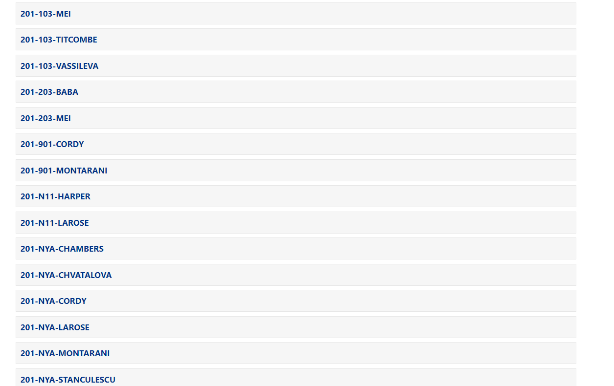

About!
This page is about web page designs that I like and web page desings that I don't like. If you don't agree with me then my advice to you is is to agree with me.
Web page designs that I like
Sonic Frontiers
I like the layout for the new Sonic the Hedgehog game, Sonic Frontiers.
The header was what I really liked because it has all you need:
The name, and information about the game are on the left of the header and newsletter and purchase is on the right.
That way you'd know right away that there's a difference between those options before even reading them.

The rest of the page is also great because it only gives you the information you need and isn't overloading you.
Thomas & Friends Engines
The Thomas & Friends Engines page is very good.
Other than it being very very cluthered, It does its job really good, which is only displaying all the engines.
It's really cool that when you size the window to big or small, all the images change in a way to fit the whole page the best way possible.

There is very little text and information about the characters though, but if you're just looking for an engine from the show, then you probably don't need anything.
Web page designs that I don't like
Webworks
I don't like the design of the webworks website.
My main problem with the website is how all the classes are just dumped into a compact list. It makes it a bit annoying when you want to find your class for the first time.

I am nitpicking, but I don't like the navigation system. It doesn't work well. I usually have to click on a few extra links to get to the page I want because all the pages look the same with the same exact looking blue buttons near the same positions everywhere.